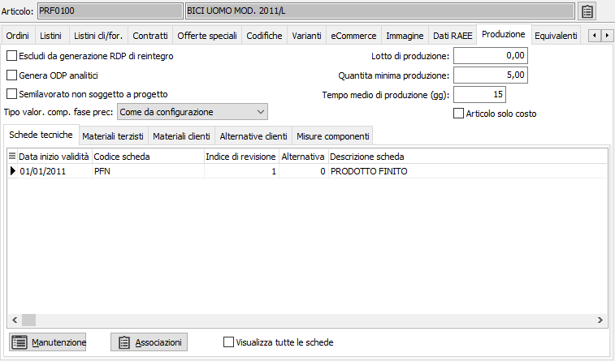
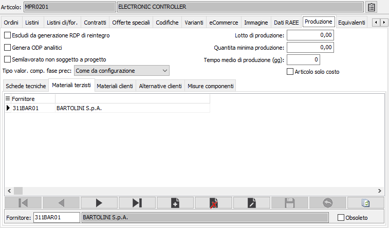
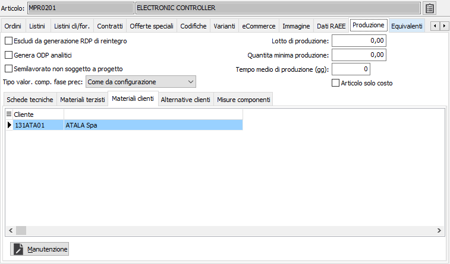
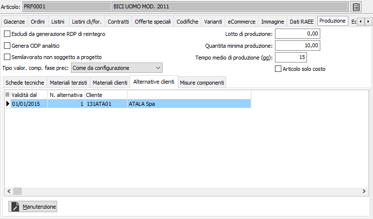
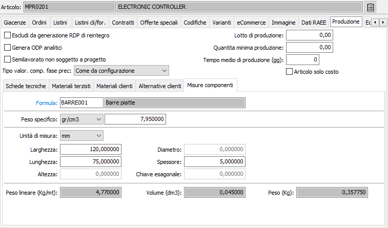

Produzione
La sezione è visibile solo in presenza del modulo Produzione. I campi introdotti in dettaglio sono:
Escludi da generazione RDP di reintegro: se l’articolo è gestito a scorta minima la funzione di generazione reintegri presente nella gestione del piano provvede a creare la RDP nel caso in cui l’articolo sia sottoscorta. Se si vuole escludere un prodotto da questa operazione spuntare la casella.
Genera ODP analitici: a livello di unità produttiva viene definito il tipo di raggruppamento da adottare in fase di generazione ODP (opzione Tipo raggruppamento). Se la regola generale prevede il raggruppamento per prodotto oppure per cliente/prodotto è possibile tuttavia scegliere di generare ODP analitici per prodotti particolari di cui si intende analizzare più nel dettaglio l’andamento della produzione.
Semilavorato non soggetto a progetto: a livello di unità produttiva è definito il tipo di gestione da applicare nel caso di prodotto gestito a commessa (in OS1 si parla comunque di progetto). Il codice progetto assegnato al rigo ordine cliente (secondo le logiche definite a livello di causale ordine) viene utilizzato come criterio di raggruppamento degli ODP dei prodotti finiti e dei semilavorati necessari per la produzione del prodotto finito (secondo quanto specificato nelle opzioni “Raggruppamento per progetto su PF” e “Raggruppamento per progetto su SL”), tuttavia per semilavorati di valore minimo si può scegliere di non propagare il codice progetto anche sugli ODP dei SL.
Lotto di produzione: è la quantità del lotto di produzione (utilizzato in fase di generazione ODP ed in fase di valorizzazione per il conteggio dei costi di setup nel caso di lavorazione interna e dei costi aggiuntivi nel caso di lavorazione esterna).
Quantità minima di produzione
Tempo medio di produzione (gg): in questo campo va indicato il tempo medio di produzione (espresso in giorni), il valore viene utilizzato in fase di generazione RDP da reintegro per calcolare la data di termine della produzione e per la proposta della data di consegna sugli ordini (se configurato).
Articolo solo costo: Il campo è visibile se configurata la gestione impostando il flag “Gestione articoli solo costo" e la "Causale di magazzino articoli solo costo" nella configurazione "Produzione - Impostazioni generali" (la causale deve essere una causale di magazzino con Tipo movimento impostato a “Solo valore”). Se la casella è spuntata i componenti con tale caratteristica attivata non vengono trattati in fase di gestione buoni di prelievo e Ddt di invio terzista, vengono scaricati con una causale di solo valore per conteggiarli nel costo del composto senza intaccare la giacenza, generano impegno e fabbisogno sul piano che non dà origine a richieste e vengono evidenziati ove presenti con il colore viola.
Tipo valorizzazione composto fase precedente: definisce il tipo di costo da applicare (costo medio, costo ultimo, costo standard) per il calcolo del costo del composto alla fase precedente in fase di avanzamento fase. Se si indica il valore “Come da configurazione” il valore utilizzato è quello presente in configurazione base.
Elenco schede tecniche associate: visualizza l’elenco delle schede tecniche attive alla data di sistema con possibilità di accedere alla scheda tecnica stessa oppure al programma di associazione prodotti.

Elenco materiali terzisti: per i componenti forniti da terzisti vanno indicati i codici dei fornitori; in fase di generazione ODL il componente se risulta fornito dal terzista non viene considerato ne per il calcolo delle RDA ne per il calcolo dei costi MP; la stessa informazione si trova sull'anagrafica del fornitore sulla pagina Produzione.

Elenco materiali clienti: visualizzato solo se presente il conto lavoro attivo; per i componenti forniti dal cliente vanno indicati i codici dei clienti che forniscono il materiale; in fase di generazione ODL il componente se risulta fornito dal cliente non viene considerato ne per il calcolo delle RDA ne per il calcolo dei costi MP. L’elenco dei materiali forniti dal cliente è importante in quanto tutti i materiali dovranno essere caricati (tramite l’apposito Ddt di ingresso materiali) sul magazzino del cliente stesso e durante tutta la fase produttiva verranno movimentati su tale magazzino.

Alternative clienti: consente di definire quale sia l’alternativa di scheda tecnica da utilizzare per uno specifico cliente. Viene utilizzata in fase di inserimento ordine oppure in fase di generazione RDP per assegnare la giusta alternativa da utilizzare.

Misure componenti: visibile se attiva la gestione misure componenti in configurazione produzione - scheda tecnica. Consente di associare al prodotto una formula ed i relativi valori al fine di calcolare il fabbisogno in kg all’interno della scheda tecnica. La formula da applicare per il calcolo e le misure di base possono essere modificate sulla scheda tecnica. In base alla formula scelta saranno attivati i relativi campi misure in modo da imputare i valori che determineranno il peso lineare, il volume ed il peso unitario.
